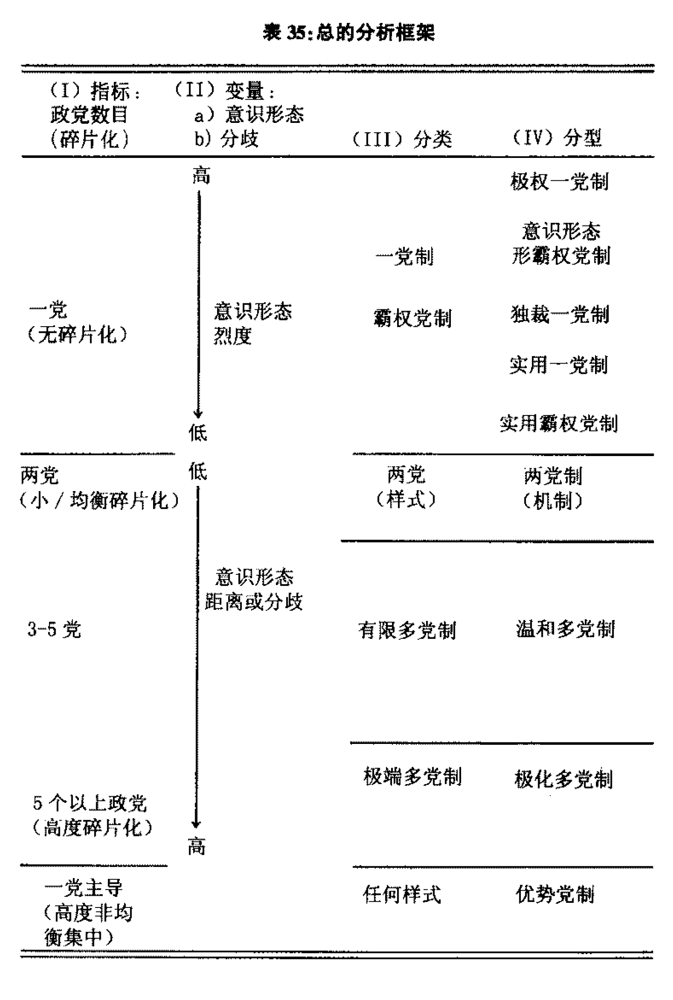
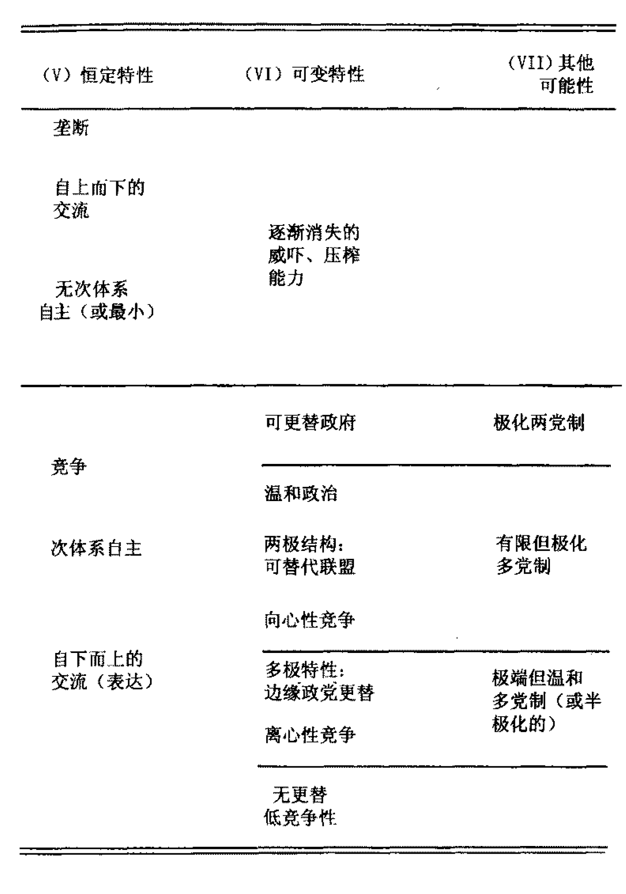
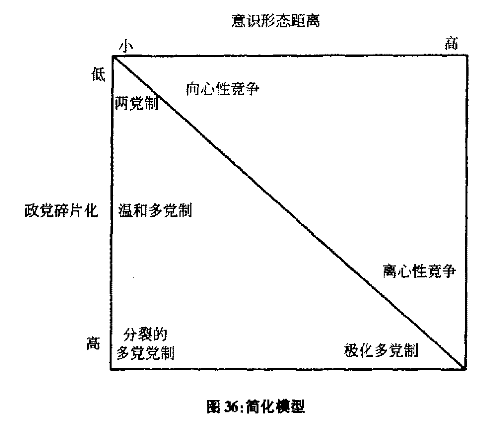
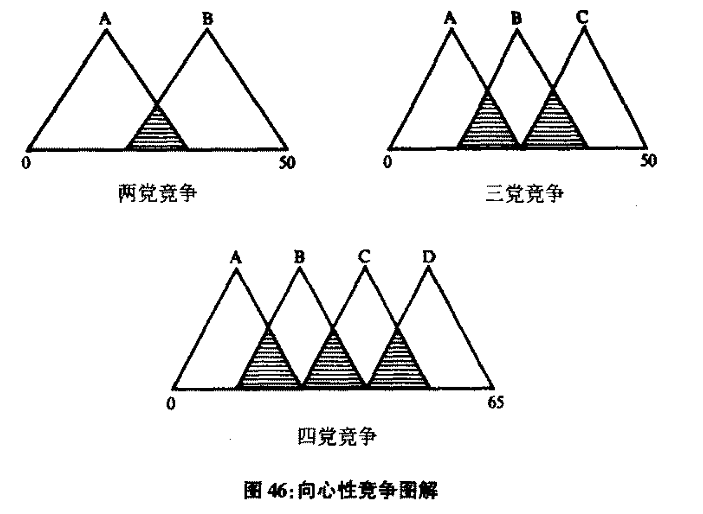
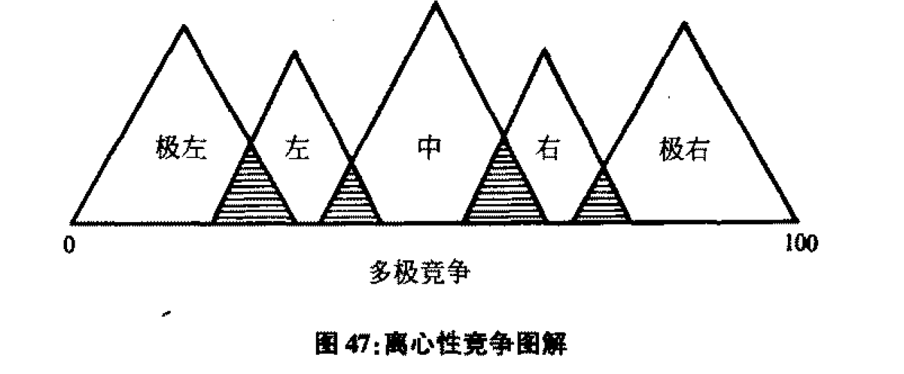

版本：乔万尼·萨托利：《政党与政党体制》，王明进译，北京：商务印书馆，2006。
乔万尼·萨托利（Giovanni Sartori，1924-2017），出生于佛罗伦萨，后加入美国国籍。其著述有《政党与政党体制》《民主新论》《比较宪法工程学》等数十种。萨托利分别于2005年和2006年荣膺欧洲政治研究联合会终身成就奖与美国政治科学学会终身成就奖。罗伯特·达尔（Robert Dahl）称萨托利“对当代民主理论作出了富有生命力的、非常重要的和杰出的贡献”，阿伦·利普哈特（Arend Lijphart）认为，萨托利在民主理论领域“没有真正的对手”。
《政党与政党体制》（1976）是萨托利的经典著作，常被认为是独立的政党学的发端，出版22年之后，该书获评1998年美国政治科学学会“杰出著作奖”。全书分为两部分，第一部分阐述政党的基本原理，第二部分则应用这一理论体系对政党体制展开具体分析。原书已轶的第三部分，本将讨论政党的类型、组织和功能。
书的第一部分包括四章，结合历史视角，从结构和功能两方面，分析了作为部分和整体的政党。第一部分从“从宗派到政党”的历史视角出发，以“从政党到宗派”的结构视角收尾。书的第二部分包含六章，在以迪维尔热为代表的既有政党研究的基础上进一步深化。第二部分以“竞争”为主线，先是串联了对政党计数标准、竞争性与非竞争性体制、不稳定政体和伪政党等研究对象的讨论，然后细化了第三章提出的初步理论框架。最后，萨托利从唐斯理论出发，构建了多向度的“政治空间”，论述了极化多党制对民主政党体制发展的危害所在。
第一章：作为部分的政党
从“宗派”（faction）到“政党”（party）的演变史：伏尔泰，马基雅维里，孟德斯鸠，【pp. 11-16】
“政党”的两个词源。宗派是具体的集团（concrete group）；政党是分析性的分割（analytic partition）。【pp. 13-14】
- 博林布鲁克：宗派比政党邪恶，但它们都是同样的祸患。总的来说，博林布鲁克反对政党。【pp. 16-19】
- 休谟：对政党的态度更宽厚；类型学的贡献：个人的集团vs真正的集团，后者又分为源自利益的、源自原则的和源自情感的。【pp. 19-22】
- 伯克：“政党是建立在一些人们集体认同的特别的原则之上、以共同努力促进国家利益的联合起来的实体。”伯克的靶子：国王的人。【pp. 22-23】
- 孔多塞：反对英国式的政党。原因：卢梭影响、尊崇理性、个人主义。基本事实：严酷的现实和宗派主义的毒性。【pp. 26-27】
- 联邦党人：对政党依然未作出本质让步。【p. 28】
多元主义是政党的腹地/背景因素，包括三个层次：文化，社会，政治。【pp. 32-33】多元主义→政党作为“部分”【p. 35】
四个特别之处：多元主义相对于共识与冲突的立足点；多元主义与多数统治的关联；多元主义成长于战争和宗教迫害；多元主义不仅仅包含多个团体，团体还必须是自愿的、非排他的。【pp. 35-41】多元主义世界观的核心：分歧以及对分歧的赞许。【pp. 35-36】
从负责任的政府到反应型的政府/政党政府。【p. 44】我们得到的不仅是现代政党，而且还有作为政治体制结构性要求的、从而成为政治体制的次体制之一的政党体制。【p. 47】
托克维尔，奥斯特罗果尔斯基，米歇尔斯：担心政党之恶。【pp. 48-50】
三个基础前提：1. 政党不是宗派；2. 政党是整体的部分；3. 政党是表达的渠道。【p. 52】
政党的功能：代表机构和表达工具，重点在后者。【pp. 56-57】
第二章：作为整体的政党
无党的两种情况：没有（未出现）政党，敌视（镇压）政党。【p. 62】
植入一党制的西方民主：大范围选举权；以群众性政党为轴心的结构化的政党体制。【p. 64】一党制存在的原因：现代社会不能没有表达渠道。一党制更需要普遍政治化的社会。【p. 65】单一政党无法产生“政党体系”，但可以是一个系统。【p. 69】
党国体制是国家的复本，是“一元系统”。【p. 70】党国体制不允许次体系的自治。【p. 72】一党多元主义：党内分歧是“私人的”而远不是“功能性的”竞争，迪韦尔热陷入了“单位跳跃的谬误”。【pp. 78-79】
第三章：初步的框架
政党的两个功能：表达（expression），引导（channelment）；引入第三个功能：交流（communication）。【p. 82】交流被置于表达之下且包含于其中。【p. 85】
政党体制和党国体制都为社会提供了引导渠道，但除此之外，二者迥异。【p. 86】
政党是从行为者、行为、结果或目的、范围等方面定义的，但也可从功能、结构定义，也可从输入、输出定义。【pp. 90-91】最小定义策略：政党是“一个在选举中系统地表达全面的问题并提出候选人的集团”/“向民选议会的选举提名候选人的组织”/“追求把其支持的代表安排进政府职位这一目标的组织”【pp. 92-94】
萨托利的定义：政党是由在选举中提出的正式标识来辨明身份的、能够通过选举（自由的或不自由的）提名候选人占据公共职位的政治集团。【p. 95】
- 部分与整体的框架→多党制理论：如果政党是部分，那么整体就不能仅由一个政党来代表或构成，尽管不能由此推导出每一个政党应该为自己而作为部分、作为与整体无关的部分而行为。
- 部分与整体的框架→一党制政党/党国的原理：如果政党是部分，则它是一个“坏”的政党，如果整体不能与其好的部分协调,则它是一个“假的”整体。【p. 98】
第四章：从内部看政党
政党次单元如何连接/肢解政党。【p. 104】
次政党的连续统：宗派（特定的权力集团，最分裂）——派别（一般的类别）——倾向（固定的态度，分裂最不突出）。另两种可能性：非结盟的党员；粉碎性的政党。【p. 109】次政党解剖的四个向度：组织；动机；意识形态；左与右。【p. 110】
政党派别分析框架与类型清单。【p. 119】
美国南方政治有宗派无政党？并非如此。美国的联邦结构拥有两层的政党体系，导致了这一混乱认识。实际只是两党未能形成两党制运作机制这一形势。【p. 124】
竞争越弱，党内派别主义越强。在南方州，接近竞争的一组倾向两宗派，亚竞争的一组倾向多宗派。【pp. 128-129】
- 美国不是没有政党的派别，而是建立于政党之上的派别；不是一党/无党制，而是主导党体制。【p. 132】
- 意大利：极化多党制。【p. 132】
- 日本：“派系的重要性超越政党”。【p. 138】
两国都有牢固的派别次体系在党内运作，但都不可以说取代了政党。两国的区别主要是体制层面。【p. 140】
机会结构塑造政党体制。【p. 142】机会结构塑造次政党过程。【p. 144】
政治在政党层次可见，在次政党层次不可见，这影响了政客的行为。【p. 146】
政党规章的三个主要因素：禁忌，组织结构，选举制度。【p. 147】
政党的基本变量：内部的选举安排。竞选行为代表了其机会结构的核心因素，从而包含两个方面的预见：政党精英的行为反映最大限度利用选举制度的战略；得票最大化的奖励战术将随选举制度的变化而变化。【p. 149】
迪维尔热定律对政党可能是错误的，而对派别是正确的。不过这需要对他的定律作特别修改，推出五个假定：
- 胜者全取（winner takes all）型的选举制度，即超过票数制度（最多票数制）（the plurality system），将抑制并减少派别的数量，就是说，将维持并鼓励合并。假定在意识形态背景下，可能出现派别的最大化。假设是在非意识形态（实用主义）背景下，则可能出现多数和少数的二元互动。
- 高度比例性的选举制度（纯粹的PR）将允许高度的派别化，即将鼓励并产生分裂。不考虑背景-不论是意识形态的还是实用主义的派别的最大化都是不可能的，但是中等的或小型的派别则是可能的。
- 如果比例代表制受到排斥条款的矫正，派别性的次体系是可能把自己定位在中等规模的派别的，它们的规模视门槛的高低而定。另一方面，排斥条款对20%水平以下的门槛是不可能有效的。
- 意识形态派别的数量是和政党的数量相关的，利益之派别的数量则和政党的数量没有关系。
- 如果机会结构奖励小派别（mini-fraction），派别化的程度则更可能很高，而不论派别是否是意识形态型的。【pp. 150-157】
从政党回到宗派。次政党研究会遇到和政党研究一样的恶性循环：一般理论要求基本信息，但不存在一般理论就不会出现这些基本信息。【pp. 162-163】
第五章：计数标准
问题不在政党数目是否重要，而在分类标准能否使我们领会什么是重要的。【p. 170】
技术规则的难题：哪些政党是相关的？【p. 171】
政党实力：“席位实力”；执政潜力。由此推出两个规则：
- 较小的政党只要它在一段时间里是多余的，也就是在任何可能的联盟多数中不再被需要或可利用，就可以作为不相关的政党而被忽略。反过来，一个较小的政党，不论它有多么小，如果它在一段时间或在某些时刻处在至少是可能的政府多数之一的位置上，则不能被忽略不计。
- 一个政党，无论何时，只要它的存在或出现影响到政党竞争的战术，特别是当它改变了定位于执政的政党的竞争方向——通过决定从向心的到离心的转变，不论是左向、右向，或在两个方向，那么它就具有了相关性。【pp. 172-174】
新的数目分类：1. 一党制；2. 霸权党制；3. 主导党制；4. 两党制；5. 有限多党制；6. 极端多党制；7. 粉碎型体制。【p. 178】
双向度的分类图示：横轴是数目分类；纵轴是权力结构分类，采用“集中→垄断”的向度，包括完全垄断、等级（宽松垄断）、单向集中（无权力更替）、平衡集中（有权力更替）、低度分裂、分裂、极化且高度碎片化共7种类型。权力分布类型和政党体制类型各自对应。【p. 182】
第六章：竞争性体制
极化的多党制不引人注目的两个原因：二元论的障眼法；计数法的局限。【pp. 184-185】
极化多党制的特征：1. 具有相关性的反体制政党；2. 双边反对党；3. 中央存在一个或一组政党；4. 是一个极化的体制；5. 离心性驱动力对向心性驱动力可能的超越；6. 固有的意识形态型式；7. 不负责的反对党；8. 抬价政治或过度承诺。【pp. 186-199】
意识形态的距离→极化。【p. 192】
极化多党制、温和多党制的个案验证、数据分析与图表列举。【pp. 208-267】
两党制的难题：定义模糊，很难找到个案。【p. 269】放宽两党制的标准：两党处于竞争绝对多数议席的地位；两党之一实际上成功地获得足够的议席多数；该党愿意单独执政；权力的轮替或轮转一直是一个可信的期待。【p. 273】
用唐斯模型解释两党制：政党将进行向心性的竞争。【p. 280】观念分布越少，两党制越平稳；意识形态距离大，两党式样的功能就会失灵。【pp. 281-282】
主导党体制：大党持续地获得选举的整理多数（席位的绝对多数）的支持。【p. 288】主导党体制下的政党仍然享有霸权体制下小党所享受不到的机会均等。【p. 297】
第七章：非竞争性体制
竞争性结构中，选民有言论自由、退出的自由，最低的、不可剥夺的条件是自由的、不受阻碍的退出；非竞争性结构中，这些选择中至多只有一项是被允许的。【p. 304】
一党制的三种式样：1. 极权主义（totalitarian）一党制；2. 独裁主义（authoritarian）一党制；3. 实用主义（pragmatic）一党制。【p. 306】
决定（度量）一党制国家的榨取性-压迫性能力的最强大的唯一因素是意识形态因素。再次采用意识形态-实用主义标准。【p. 308】
- 根据“意识形态-强制”标准：极权主义一党制：强烈意识形态化的、高度强制性的、压榨性和动员性的，并致力于强加的（政治）发展；独裁主义一党制：具有较低意识形态烈度、较低压榨性和动员能力的，致力于排斥性政策：既没有力量也没有野心要渗透到整个社会；实用主义一党制：不具备上述所有特征，特点是包容性的或凝聚性的政策，致力于自然的发展。
- 根据与外部的和中介集团的关系：极权主义样式是全面主义的；独裁主义样式阻碍次体系但却容忍某种次集团的自主性；实用主义样式则对次集团的自主性相当开放。【pp. 314-315】
霸权党制：既不允许正式的、也不允许事实的权力竞争。【p. 321】次类型：1. 意识形态霸权党；2. 实用主义霸权党。【p. 323】
第八章：不稳定政体和伪政党
方法论的警告：不稳定政体的政党体制分类问题。【p. 335】非洲的政党体制。【pp. 343-354】为不稳定政体特别提出的分析框架。【p. 364, p.366】
飞去来器效应：对不定型国家研究的比较失当对定型国家研究所造成的损害。【p. 369】
第九章：总体框架
强调非连续性。自然语言中“连续统”概念难以数学化，且吸引单向演变的乐观主义。【pp. 373-374】连续统是否“连续”的关键在于，两种体制在没有断裂的情况下，能否连续地通过内部变革相互转换？这是事实问题。【p. 377】
我们在处理两个异质的连续统：多党制/两党制/主导党体制，和霸权党制/一党制。前者是竞争性/多元主义的，后者不是。【pp. 385-386】
总的分析框架。【pp. 392-393】


总分析框架的简化模型。【p. 400】

对作者的三种反对意见，其中主要的一种批评在于：分类的逻辑已被测量所取代。【pp. 401-402】
定性科学是如何处理“是什么”的问题的？1. 对概念的分类处理；2. 包括“多或少”（程度）的处理的“分级逻辑”；3. 把数学数学赋予数字。【pp. 404-405】
测量政党的相关性：$\dfrac{n}{\sum C_i}$。【pp. 414】
分裂指数（雷）：$F = 1 - \sum\limits_{i=1}^N p_i^2$。【pp. 422】
碎片化指数（弗兰纳根）：$F_t = \sqrt{\sum\limits_{i=1}^n V_i^2}$。【pp. 423】
标称和数学相结合的途径。【p. 434】
第十章：空间竞争
从三个角度重评唐斯理论：1. 民主理论的一般背景；2. 经济前提和选举理论的更好切合；3. 空间模型和经验发现。【p. 442】
基本问题：一个投票空间是否是单一向度的。【p. 444】理解投票的三个概念：1. 议题；2. 认同；3. 形象。【p. 448】
斯托克斯的三点批评。【pp. 451-454】政党竞争的空间模型的适用条件。【pp. 457-458】
四个基本的分野向度：独裁-民主；世俗-宗教；种族-融合；左-右。【p. 463】“左-右”的空洞性有助于多样的排序被挤压进同一个空间向度但宗教向度似乎难以吸纳。【pp. 466-467】
较宽松的假设：政党越多，它们之间的竞争越倾向于沿着一个线性的、左/右空间展开；政党体系越是展现出意识形态格局越是如此;但在意识形态意识低的分裂型政体中，竟争的空间也可能是单向度的，因为一个政党偏离到另一个向度。【p. 472】
意识形态空间的属性：1. 左-右顺序空间；2. 不均等的间隔；3. 空间弹性。【pp. 473-474】
向心性竞争与离心性竞争。【p. 478, p.484】


极化多党制模式：中间一极所获得的势力支点不鼓励、且实际上阻碍了中间性；极端政党在极化程度越高而不是越低的情况下，才能更加强盛。这种模式是长久不了的。【p. 486】
两点结论如下：1. 这里的模式是预测趋势的，而不是预测某一次选举；2. 对这里所遵循的研究方法的最好辩护来自唐斯本人：模型“从根本上说应该由其预见的精确性而不是由其假定的现实来验证”。【p. 487】